十张图由用户在 2026-11-11 提供，是与初版《千与千寻视觉设定集》不同的第二套视觉方向：
16-bit 农场 RPG 笔触、暖木色与琥珀灯光、硬像素边、一格一物。原图 4K / 5.5K 不入库，
这里放的是压到长边 768 的副本。初版基准见仓库里的 docs/art/README.md。
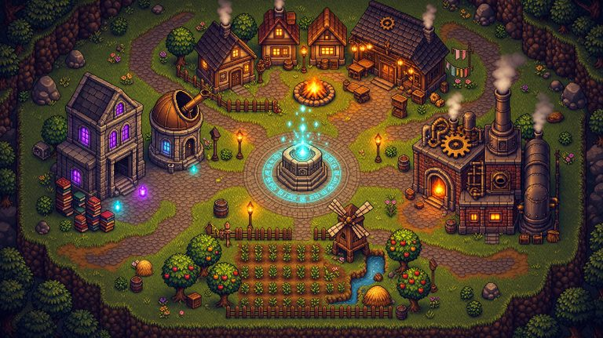
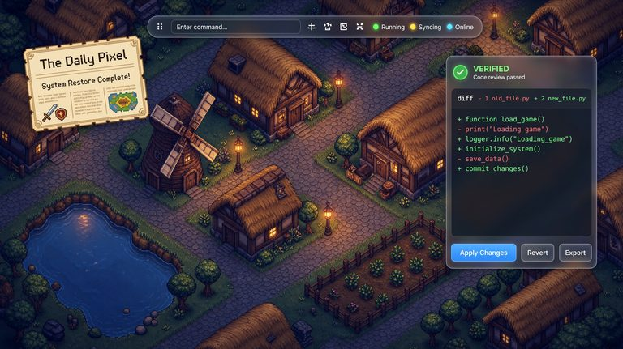
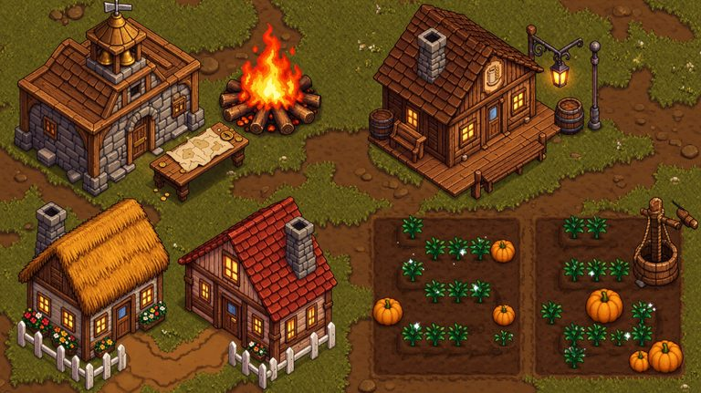
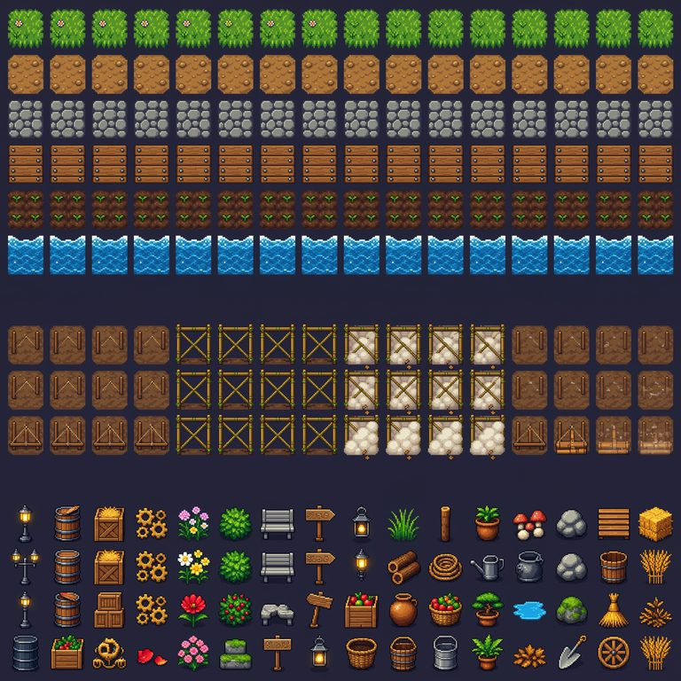
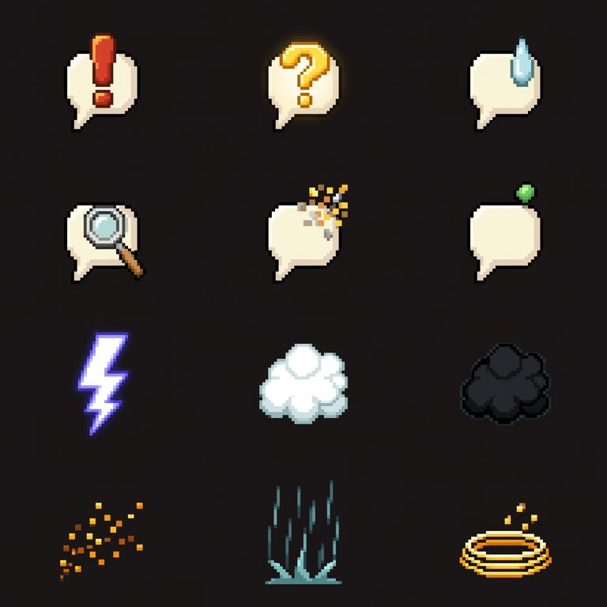
emote/*。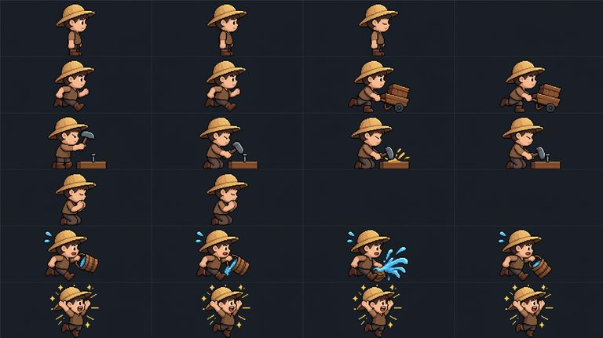
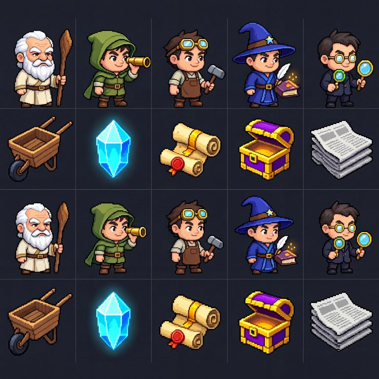
icon/role-*；也是立绘锚点。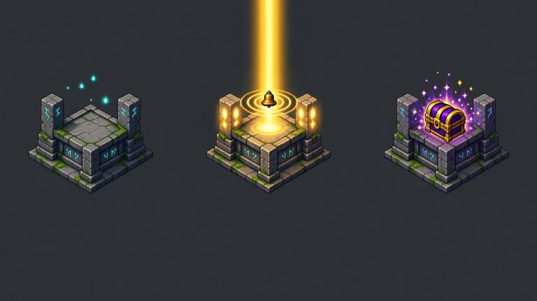
state/altar-*，接在神谕回执上。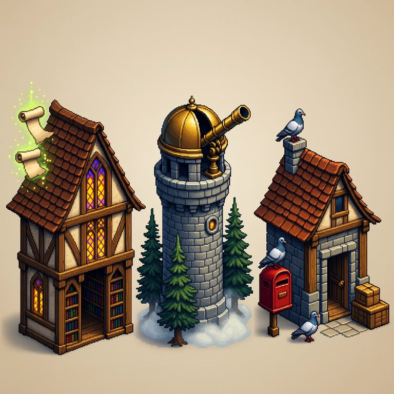
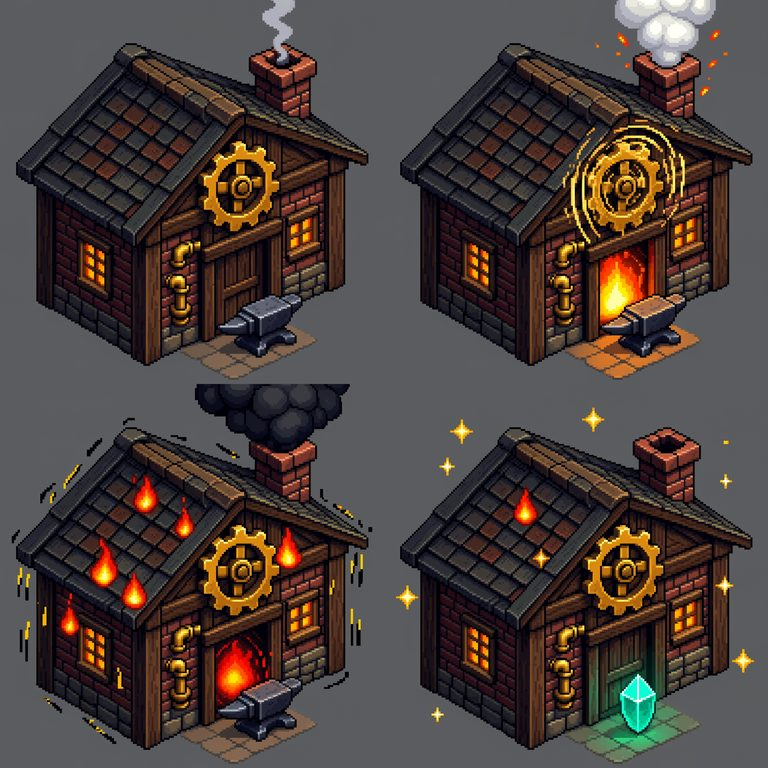
state/workshop-*，接在楼面板的状态行。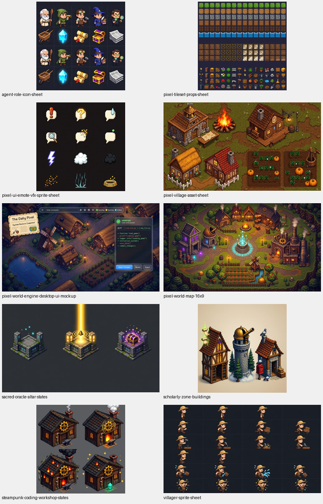
生图与切图脚本在 server/scripts/ 下：
art_ref_1111.py（七张立绘 + 29 件切片）、
art_unify_1111.py（17 件旧素材统一）、
art_plates_1111.py（13 张画册贴片）。
清单在 world-client/public/assets/manifest.json，决策与闸门读数见
docs/adr/ADR_ART_REF_20261111.md。